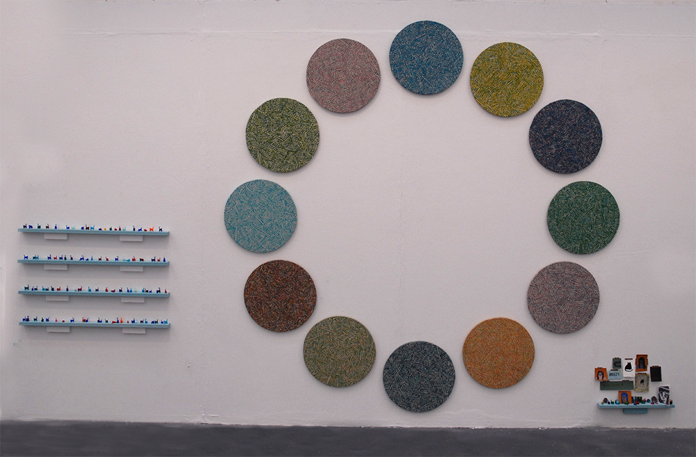
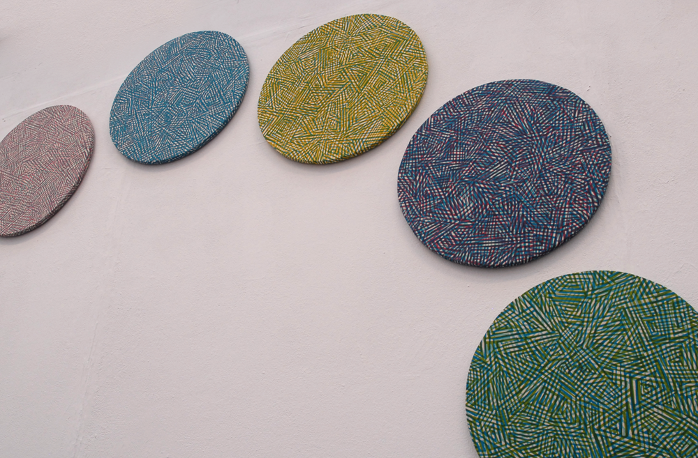
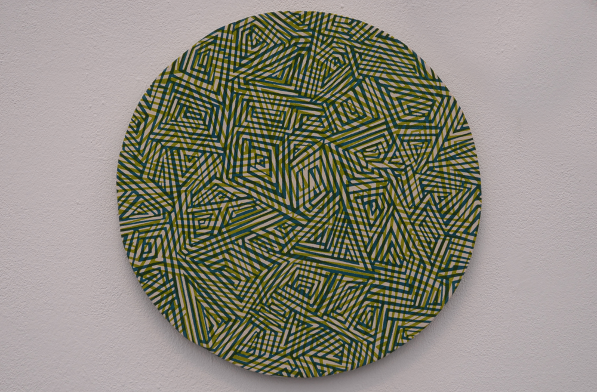
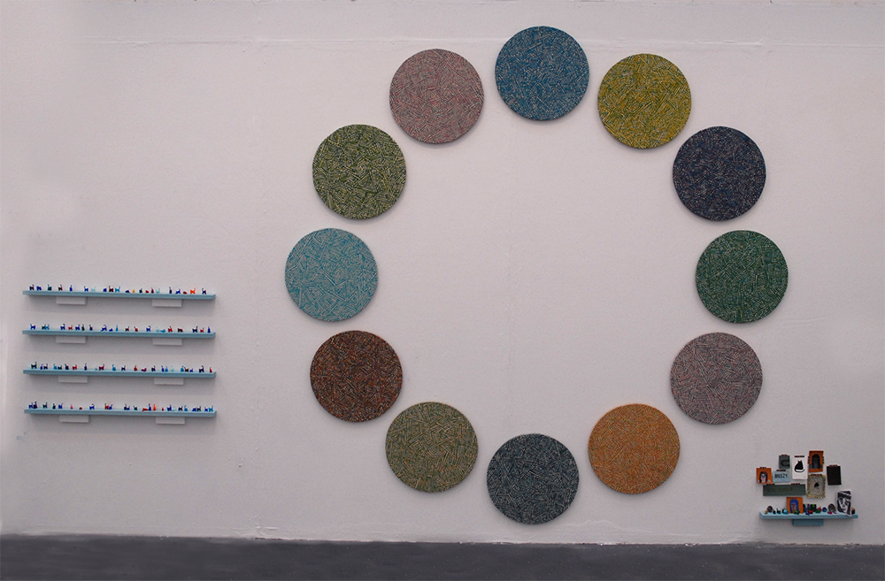
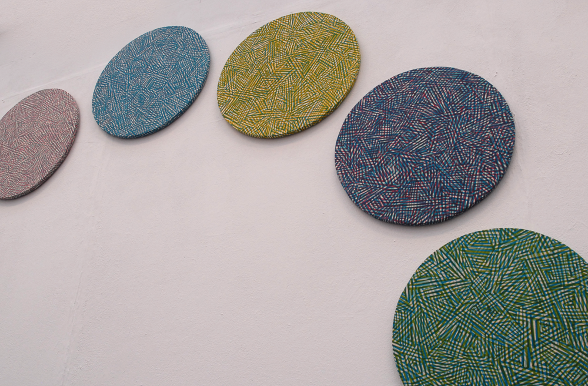
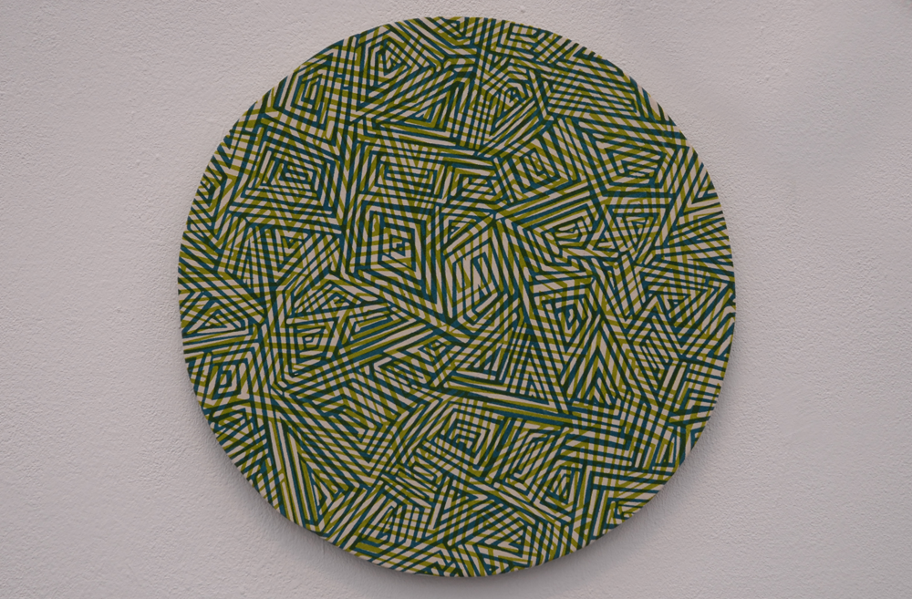

Circlular Screenprints
12 large multilayered prints on fabric, mounted on wooden circles and displayed in a circular formation.
  
12 large multilayered prints on fabric, mounted on wooden circles and displayed in a circular formation.
  